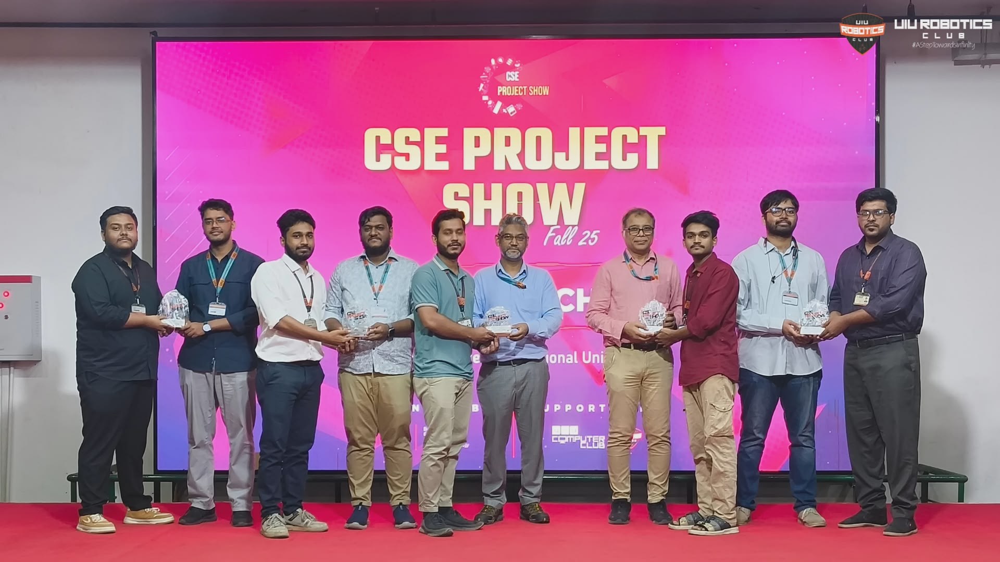
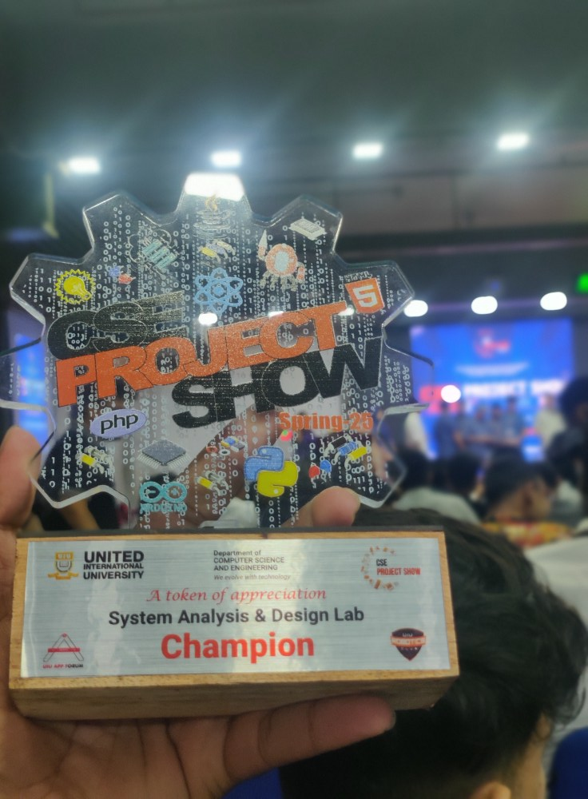
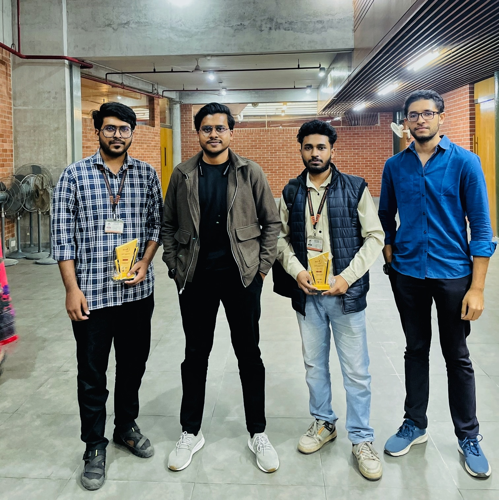
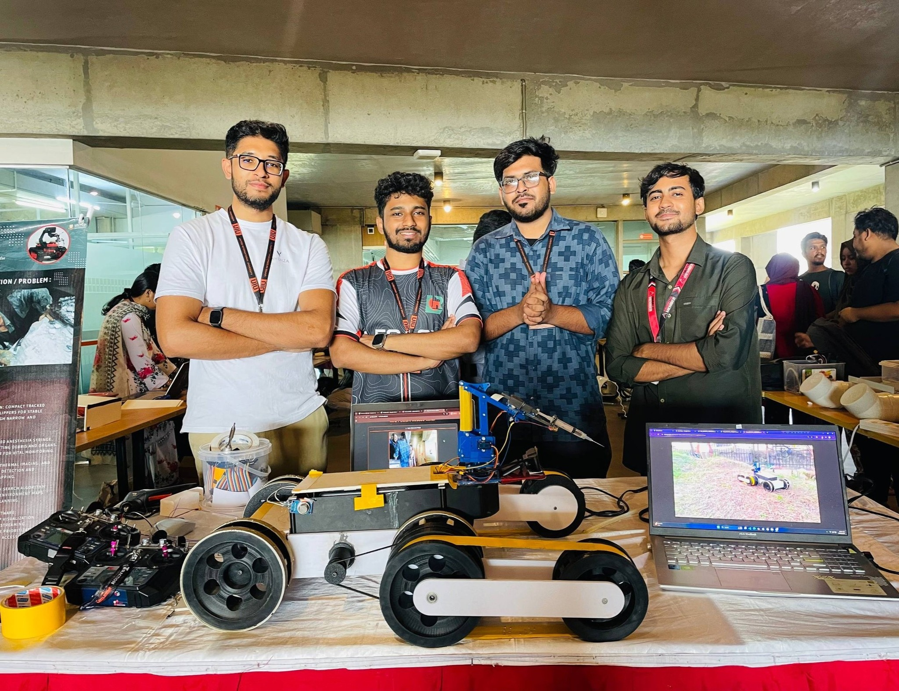
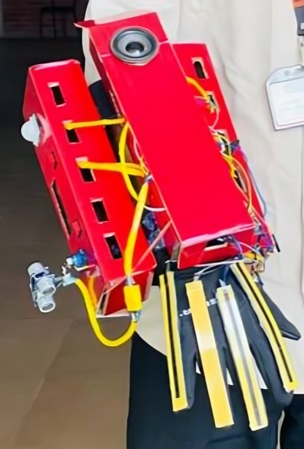
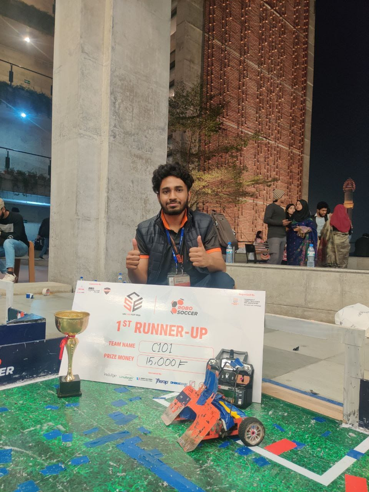
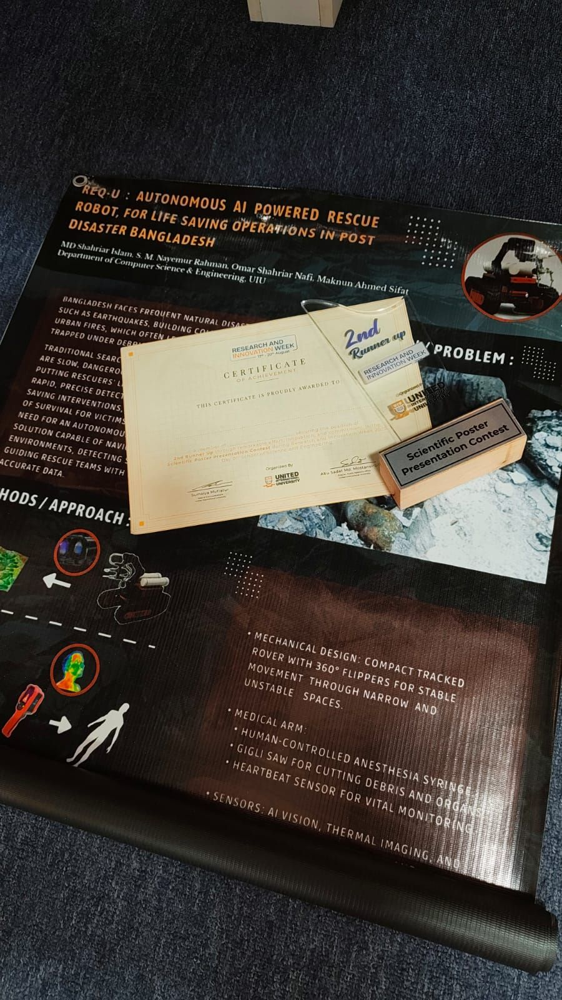
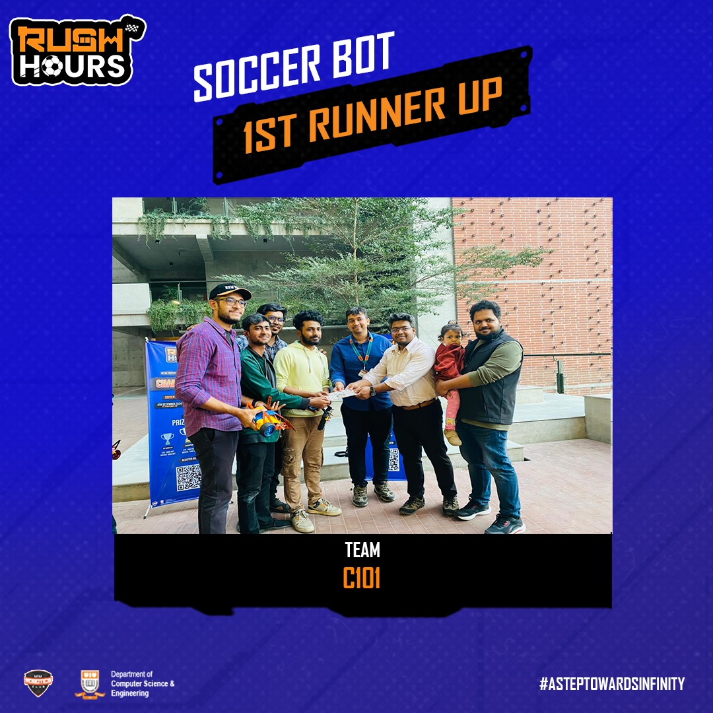
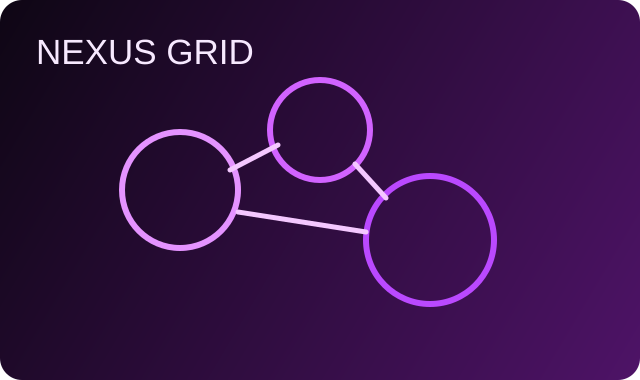

Future Systems Architect
Maknun Ahmed Sifat
AI Systems Enthusiast | ML, Networking, and Embedded Intelligence
I’m an undergraduate engineer interested in building intelligent systems that combine software and hardware. My interests include machine learning, networking, and embedded or edge AI systems.Currently, I work as an Undergraduate Teaching Assistant, where I support students in core computing courses while continuing to explore research-driven projects.I’m particularly interested in developing practical AI systems and scalable infrastructure that connect intelligent algorithms with real-world devices and networks.
Open to Research & Engineering Roles
About Me
Engineering Beyond Boundaries
I build systems that bridge software intelligence and hardware reliability. My work spans scalable backend architecture, machine learning integration, embedded firmware, and IoT ecosystems optimized for real-world performance.
From designing AI-assisted control logic to debugging electronics at signal level, I focus on innovation, systems thinking, and measurable impact across the full stack of modern technology.
Skills
Technical Skills
Hardware
Achievements
Software and Hardware Impact
Software Achievements

Advyon - Champion
Among 100+ teams Advyon Secured The First place

ResQ - Champion
Among 126 Teams ResQ Secured First place

Fire safety map - 1st Runners-Up
Out of 128 incredible teams, achieved the 1st Runners-Up
Hardware Achievements

REQ-U - 2nd Runners-Up
Yo Yo

Assistive Gloves For Blind and Mute - 2nd Runners-Up
Developed real-time embedded control firmware for robotics prototypes.

1st Runners-Up - UIU CSE FEST 2025 [Robo Soccer]
Knocking out 54 Teams it Secured 1st Runners-Up
Other Achievements

UIU Research and Innovation Week 2025
Earned 2nd Runners-Up Award in the Poster Presentation Competition under the School of Science & Engineering category.

Rush Hour Intra University Robotics Competition
Secured 1st Runners-Up
Projects
Flagship Work
ADVYON – AI-Powered Legal Workspace (Champion : UIU CSE Project Showcase)
ADVYON – AI-Powered Legal Workspace “From documents to decisions – faster, safer, smarter.” ADVYON is designed to redefine how modern legal professionals work. It is an end-to-end AI-integrated legal ecosystem built for: ✔ Law firms ✔ Solo lawyers ✔ In-house legal teams ✔ Legal operations departments ⚖️Try ADVYON: advyon.vercel.app ⭐Core System Highlights⭐ 🤖 AI Legal Co-Pilot 1. Chat with an AI trained on your own cases, documents, threads, and legal database 2. Multi-document analysis: summarize, compare & extract key insights instantly 3. Smart suggestions: next steps, legal references, risk flags & checklists 4. Context-aware AI Assistant Sidebar 📂 Smart Case & Document Workspace 1. Centralized case workspace (files, notes, messages in one view) 2. Secure uploads with live processing status (Pending → Processing → Done) 3. AI-generated summaries, categories & key insights 4. Unified “My Documents” with filters & AI statistics 5. Quick search across cases, documents & summaries legal document 📅 Scheduling & Deadlines Intelligence 1. Legal calendar with automatic conflict detection 2. Dashboard view of today’s hearings, tasks & deadlines 3. AI-highlighted urgent matters & critical upcoming dates 💬 Client Collaboration & Legal Community 1. Secure 1-to-1 lawyer–client messaging system 2. Case threads (star, archive, mark as read) 3. Access-controlled case sharing 4. Community Q&A hub with AI-poweredquestion's answer suggestions based on sentiment analysis. 5. Smart tagging & legal reference suggestions 6. AI-generated community thread summaries 📊 Business & Analytics Dashboard 1. Live case, client & revenue metrics 2. Workload & deadline insights 3. Team performance analytics 4. Admin & operations KPIs 🔐 Trust, Security & Compliance 1. Bank-grade security with hardened APIs & rate limiting 2. Secure file handling architecture 3. Role-based access (Client / Lawyer / Admin / Super Admin) 4. Full audit trails (activities, logs, notifications per case) 5. Privacy-first system with clear Terms, Privacy, Cookie & Security policies 6. Stripe-powered subscription & payment integration 🏆 Why ADVYON Wins ADVYON combines: ✔ Case management ✔ AI intelligence ✔ Analytics ✔ Secure collaboration ✔ Legal community ecosystem All inside a single unified platform. It is built specifically for real legal workflows.
Go, Node.js, Docker, Kubernetes
REQ-U - (2nd Runners Up : UIU CSE Project Showcase)
"REQ-U" is designed to assist in post-earthquake rescue operations especially in densely populated cities like Dhaka, where it’s often too dangerous or impossible for humans to reach victims trapped under debris. ⭐Key Features: 📍1. Flipper Mechanism: Custom-built front flippers enable REQ-U to move through rocks, debris, uneven terrain, and slopes, ensuring stability and adaptability in harsh environments. 📍2. 4-DOF Robotic Arm: The rover is equipped with a four-degree-of-freedom robotic arm that allows flexible and precise movements that are essential for handling delicate rescue operations in tight or dangerous spaces. 📍3. Syringe Mechanism: Attached to the arm is a manual syringe system, developed with a custom gear mechanism to push and retract the syringe accurately. It allows medical teams to administer anaesthesia or emergency medication remotely, ensuring safety and precision. This feature is fully human-controlled, emphasizing our focus on ethical, life-saving applications. 📍4. Real-Time Monitoring & Sensors: REQ-U is fitted with a live camera feed and multiple sensors for toxic gas detection, environmental data, and area safety analysis then all sent back to the base station for real-time decision-making. 📍5. Web Based Dashboard: Our web interface displays live video, sensor readings, and the rover’s trajectory and location, allowing operators to monitor and control REQ-U remotely with ease and accuracy. ⭐ This is just the first prototype of REQ-U, and our vision goes far beyond this stage.
C/C++, STM32, FreeRTOS, PCB Design

Experience & Education
Journey Timeline
Senior Systems Engineer
Leading cross-functional software-hardware integration for intelligent devices.
Embedded AI Research Engineer
Developed optimized inference pipelines for edge devices in research prototypes.
B.Sc. in Electrical and Computer Engineering
Focused on embedded design, machine intelligence, and robust systems architecture.
GitHub
Open Source Presence
Explore repositories, code contributions, and ongoing engineering experiments.
Visit GitHub ProfileContact
Let's Build The Future
Email: alex.quantum@engineering.dev
LinkedIn: linkedin.com/in/alex-quantum
GitHub: github.com/SiFAT-07